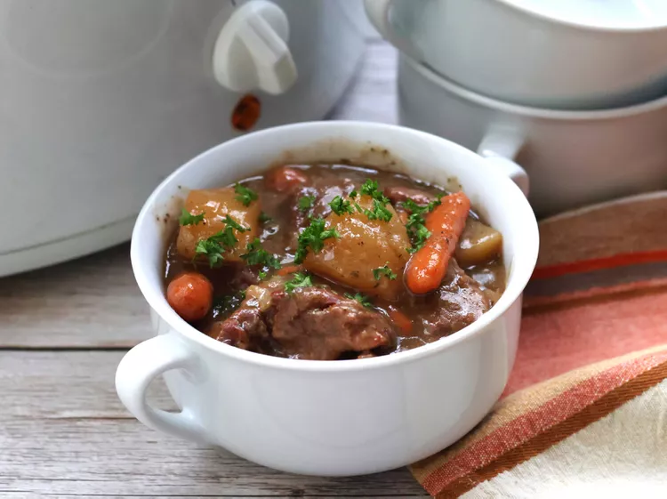

Easy Slow Cooker Beef Stew

Gather your friends and family during the holidays and let your belly's get full for a good nap!
This Stew pot takes no time to prep. I usually prepare the ingredients the night before and in
the morning before going to work, I throw everything in the slow cooker. Then everything is ready
when we come back home from work with the kids.
Pare this meal with a good red wine and a toasty bagette to dip in the bole of stew. You will not
regret trying this recipe, trust me!
Ingredients
- 3 pounds cubed beef stew meat
- 1/4 cuo all-purpose flour
- 1/2 teaspoon salt, or to taste
- 3 tablespoons olive oil
- 3 tablespoons butter
- 3 onions, sliced
- 1/4 cup red wine
- 4 large potatoes, cubed
- 1 cuo baby carrots
- 1 tablespoon dried parsley
- 1 teaspoon ground black pepper
- 2 cups boiling water
- 1 (1 ounce) package dry onion soup mix
- 1/4 cup warm water
- 2 tablespoons all-purpose flour
Steps
- Place meat in a large plastic bag. Combine 1/4 cup flour with salt in a small bowl; pour into the bag and shake to coat meat
- Heat olive oil in a large skillet ove medium-high heat. Add floured meat and cook in batches if necessary, until evenly browned on the outside. Transfer the meat to a slow cooker.
- Melt butter in the same skillet. Add onions and saute until softened. Transfer to the slow cooker. Pour red wint into skillet and stir to loosen any browned bits of food on the bottom. Remove from the heat and pour into the slow cooker.
- Add potatoes, carrots, parsley, and pepper to the slow cooker. Stir 2 cups boiling water and dry soup mix together in a small bowl; pour into the slow cooker.
- Cover and cook on high for 30 minutes. Reduce the heat to low and cook for 6 hours, or until meat is fork tender. Mix 1/4 cup warm water and 2 tablespoons flour together in a small bowl; stir into stew and cook, uncovered, until thickened, about 15 minutes